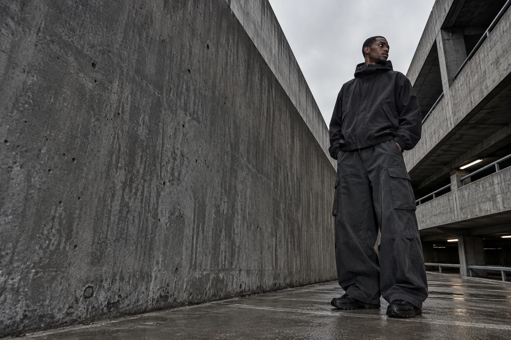
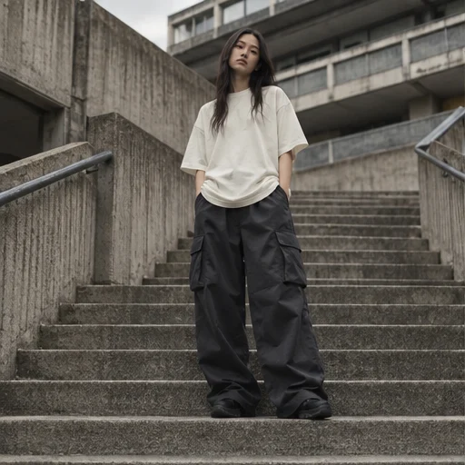
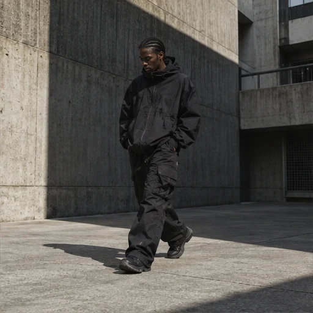

INDEPENDENT STREETWEAR / LONDON
MADEOUTSIDETHE LINES.
Independent uniforms for a generation
that moves differently.
UNIFORM_001COLLECTION CONCEPT / 2026
SCROLL TO EXPLORE ↓
BUILT FOR MOVEMENT.✳DEFINED BY NOTHING.✳OFFGRID SUPPLY✳BUILT FOR MOVEMENT.
01 / THE PHILOSOPHY
WE DON'T
FOLLOW
THE GRID.
Style isn't a set of rules. It's a way of moving through the world.
OFFGRID SUPPLY explores clothing as an extension of identity — stripped back, functional and deliberately independent.
INDEPENDENT UNIFORMS.
INDEPENDENT MINDS.

OUTSIDE CONVENTION.
LONDON / CONCEPT 2026
OF—001 / IN MOTION02 / CURRENT STUDY
DROP_01
UNIFORM
_001.
Everyday pieces.
Unwritten rules.
A capsule collection exploring proportion, utility and movement.
UNIFORM_001 explores everyday essentials through oversized proportions, technical details and a stripped-back visual language.
EXPLORE THE COLLECTION ↗SIX PIECES / ONE POINT OF VIEW
03 / THE COLLECTION
THE UNIFORM
Six essentials. Endless ways out.
FICTIONAL PRODUCTS / CONCEPT PRICES
A STUDY IN MOVEMENT, UTILITY AND CONTEMPORARY URBAN SILHOUETTES. UNIFORM_001 ↗
OUTSIDE IS A STATE OF MIND.✳
NO RULES.
NO UNIFORM.
JUST YOU.
PERSONAL STYLE. NO INSTRUCTIONS REQUIRED.
04 / VISUAL ARCHIVE
WORN
DIFFERENTLY.
An exploration of movement, form
and the spaces between.
UNIFORM_001 / SIX PERSPECTIVES
SELECT AN IMAGE TO EXPLORE ↗
DIFFERENT PEOPLE. SHARED INSTINCT.ARCHIVE / LONDON
05 / DESIGN LANGUAGE
DETAILS
WITHOUT
NOISE.
Form, function and attitude. Every element is considered, without the need for excess.
- 01 FORM
- Relaxed proportions and intentional silhouettes.
- 02 FUNCTION
- Utility-inspired details designed around everyday movement.
- 03 IDENTITY
- Subtle graphics and an independent visual language.
06 / CONCEPT ARCHIVE
MORE THAN
A DROP.
ONGOING EXPLORATIONS.
FICTIONAL CREATIVE STUDIES.
ARCHIVE STUDY 01
CONCRETE FREQUENCY ↗
Industrial architecture, washed textures and urban silhouettes.
FICTIONAL CREATIVE STUDY / 2026
ARCHIVE STUDY 02
AFTER HOURS ↗
Night photography, movement and minimal styling.
FICTIONAL CREATIVE STUDY / 2026
LET'S KEEP IN TOUCH. IN THEORY.
STAY OUTSIDE
THE LOOP.
Campaign notes, new concepts and creative updates.